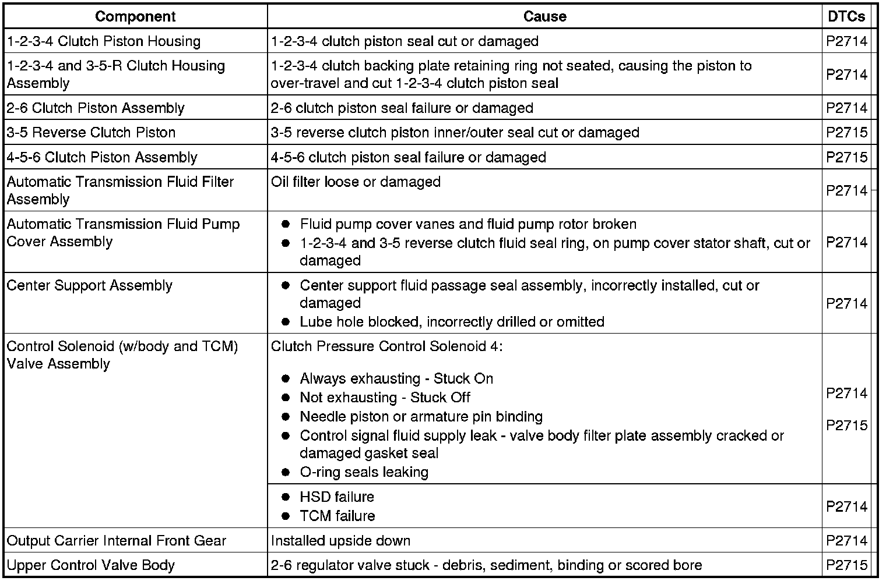
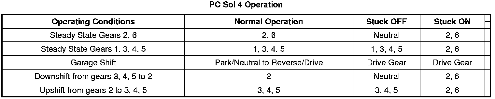

P2715
DTC P2714 or P2715
Diagnostic Instructions
* Perform the Diagnostic System Check - Vehicle (Initial Inspection and Diagnostic Overview) prior to using this diagnostic procedure.
* Review Strategy Based Diagnosis (Initial Inspection and Diagnostic Overview) for an overview of the diagnostic approach.
* Diagnostic Procedure Instructions (Initial Inspection and Diagnostic Overview) provides an overview of each diagnostic category.
DTC Descriptors
DTC P2714
- Clutch Pressure Control (PC) Solenoid 4 - Stuck Off
DTC P2715
- Clutch Pressure Control (PC) Solenoid 4 - Stuck On
Diagnostic Fault Information
The following fault table will help determine if a hydraulic circuit or an incorrect position of a valve train component affects the transmission operation.

Circuit/System Description
The clutch pressure control (PC) solenoid 4 is integral to the control solenoid (w/body and TCM) valve assembly and has no serviceable parts. The PC solenoid 4 is a normally high-pressure control solenoid which provides fluid pressure to the B-2-6 clutch regulator valve. The TCM controls the solenoid pressure by regulating the exhaust fluid. When the TCM commands the solenoid off, the exhausting fluid is stopped and the B-2-6 pressure is high. When commanded on, the clutch PC solenoid 4 regulates the amount of exhausting transmission fluid. Solenoid power is supplied by the TCM through a high side driver (HSD). The HSD protects the circuits and components that the TCM powers. Should the circuit overload the driver will shutdown. After the overload is removed the HSD reset.
Conditions for Running the DTC
* No DTCs P0716 or P0717.
* No DTCs P0722 or P0723.
* No DTCs P1825 or P1915.
P2714
* The transmission input shaft speed is greater than 60 RPM.
* 2-6 clutch is commanded ON.
P2715
* The transmission output shaft speed is greater than 200 RPM.
* 2-6 clutch is commanded OFF.
Conditions for Setting the DTC
P2714
The TCM detects an incorrect on-coming clutch gear ratio, or flare, when the 2-6 clutch is commanded ON for 0.5 seconds and the transmission input shaft speed is greater than 75 RPM from the anticipated input shaft speed.
P2715
The TCM detects an incorrect off-going clutch gear ratio, or tie-up, when the 2-6 clutch is commanded OFF for 0.5 seconds and the transmission input shaft speed is greater than 40 RPM from the anticipated input shaft speed.
Action Taken When the DTC Sets
* DTCs P2714 and P2715 are Type A DTCs.
* The TCM commands maximum line pressure.
* The TCM inhibits TCC.
* The TCM freezes transmission adaptive functions.
Conditions for Clearing the DIC/DTC
DTCs P2714 and P2715 are Type A DTCs.
Diagnostic Aids
When attempting to set transmission performance DTCs, observe the Freeze Frame and Failure Records to assist in duplicating the failure conditions.
Reference Information
Schematic Reference
* Drive Range, Third Gear (Drive Range, Third Gear)
* Drive Range, Sixth Gear (Drive Range, Sixth Gear)
Connector End View Reference
Component Connector End Views (Connector Views)
Electrical Information Reference
* Circuit Testing (Component Tests and General Diagnostics)
* Connector Repairs (Component Tests and General Diagnostics)
* Testing for Intermittent Conditions and Poor Connections (Component Tests and General Diagnostics)
* Wiring Repairs (Component Tests and General Diagnostics)
Description and Operation
Electronic Component Description (Electronic Component Description)
DTC Type Reference
Powertrain Diagnostic Trouble Code (DTC) Type Definitions (Diagnostic Trouble Code Descriptions)
Scan Tool Reference
Control Module References (Programming and Relearning) for scan tool information
Special Tools
* DT-47825 Control Solenoid Test Plate
* DT-47825-10 Jumper Harness
Circuit/System Verification
1. Perform the Transmission Fluid Check (Transmission Fluid Check) .
2. Turn ON the ignition, with the engine OFF.
Important: Before clearing the DTC, use the scan tool in order to record the Freeze Frame and Failure Records.
3. Record the DTC Freeze Frame and Failure Records.
4. Clear the DTC.
5. Operate the vehicle in drive with the calculated throttle position greater than 15 percent to obtain 72 km/h (45 mph) and achieve 5th gear. Perform this maneuver 2 times.
• If the DTC resets, go to Circuit/System Testing.
Circuit/System Testing
1. Perform the Line Pressure Check (Line Pressure Check) .
• If the pressure is out of specification, correct this concern first.
2. Perform the Control Solenoid Valve and Transmission Control Module Assembly Cleaning (Control Solenoid Valve and Transmission Control Module Assembly Cleaning) and retest the DTC as outlined in the Circuit/System Verification steps.
• If the DTC resets, continue on with testing.
3. Perform the Control Solenoid Valve and Transmission Control Module Assembly Inspection (Control Solenoid Valve and Transmission Control Module Assembly Inspection) .
• If a concern is found, repair or replace the control solenoid (w/body and TCM) valve assembly.
4. Perform the Control Solenoid Valve and Transmission Control Module Assembly Solenoid Performance Test (Control Solenoid Valve and Transmission Control Module Assembly Solenoid Performance Test) .
• If the solenoid is found to be leaking or stuck closed, replace the control solenoid (w/body and TCM) valve assembly.
5. Inspect the center support fluid passage seal assembly for cut or damaged seals.
• If a concern is found replace the seal assembly.
6. Inspect the control valve upper body assembly for sticking valves, damage, scored bores, or debris.
• If a concern if found in the valve body, repair or replace the valve body as necessary.
7. Inspect the 2-6 clutch assembly for damage.
• If a concern is found in the 2-6 clutch assembly, repair or replace as necessary.
Component Testing
Perform the Control Solenoid Valve and Transmission Control Module Assembly Inspection (Control Solenoid Valve and Transmission Control Module Assembly Inspection) .

Repair Instructions
Perform the Diagnostic Repair Verification (Verification Tests) after completing the diagnostic procedure.
* Control valve body replacement. Refer to Control Valve Lower Body and Upper Body Replacement (Service and Repair) .
* 2-6 clutch assembly repair or replace. Refer to 2-6 Clutch Overhaul (6L50) (Overhaul) .
* Control solenoid (w/body and TCM) valve assembly replacement. Refer to Control Module References (Programming and Relearning) for replacement, setup, and programming.
* Perform the Service Fast Learn Adapts (Programming and Relearning) if internal transmission repairs are performed.